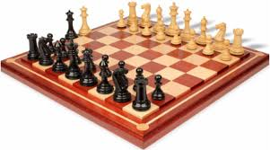

Top 5 board games

- 1:Chess
- Chess requires two players and is purely a strategy board game played on a chessboard, a checkered tiled board with sixty-four squares arranged in an eight-by-eight grid. It is one of the world's most ancient and popular games, played by millions of people all across the globe. There is no sure certainty, but chess is believed to have originated in India, 280 – 550 C during the time period of the Gupta Empire.
For me personally, chess is the only game that comes to mind that emphasizes strategy with such simplicity. With just 64 squares it simulates two opposing nations that wage war on each other battling until there is a lone king cornered, and must concede defeat. What I absolutely love most about this game is that it is a true test of strategy and intelligence. It has zero elements of chance or luck.
In this day and age, you can easily find instructions on the internet, but chess rarely came with any instruction manual. To learn, one must be taught by someone, who had to learn from someone, so on and so forth. I think that's particularity cool, a tradition that links the past to the present day.
- 2:Scrabble
- The word game Scrabble consists of two to four players who score points by placing tiles, each tile bears a single letter onto a game board which is a 15×15 grid of cells. The objective of this game was to put letters together, build words, accumulate the most words and out-score the other players. The game encouraged many repeat players to improve their vocabulary base and overall literary skills.
I remember playing Scrabble with my cousins, and always getting frustrated over the insane amount of vowels they were divinely blessed with. But, it has brought my family and friends many hours of fun and improved our spelling and vocabulary substantially. Definitely one of my all-time favorite board games.

- 3:Monopoly
- In 1933, a board game called "Monopoly" was created. The game is named after the economic term of monopoly, the domination of an entire market by a single company or entity. It was created and sold by Parker Brothers.
There's generally no middle ground when it comes to Monopoly, either you're going to love it or hate it. Hate it or love it, Monopoly seemingly has been timeless in its goal, whether to entertain or simply pass the time. Everyone has Monopoly memories. Everyone's been pushed to the edge by a frustratingly long game.
It definitely feels like the best game on Earth when everyone's nearly bankrupt and you're holding premium real estate. Monopoly has certainly evolved and changed over the years. It is a redesigned interpretation of an earlier game by political activist Elizabeth J. Magie Phillips in 1903. At the time, the game was called "The Landlord's Game." Here are few interesting and little-known facts about Monopoly.

- 4:Risk
- Another game produced by Parker Brothers, Risk is a strategic turn-based game for two to six people. The standard version of this game is played on a board depicting a political and territorial map of Earth, which contain six continents with 42 territories. Players roll a dice and control armies to attempt to take over other players territories.
Risk is ideal for people who enjoy the idea of world domination. I discovered Risk when my friends were playing it at school, I patiently sat and watched until I got the gist of the game. After a few games that I actually played well, I was hooked. I immediately got my own set and it is by far, one of the best board games I own and still play to date. It's odd playing with people you're close to, because it never fails, someone always ends up betraying someone, but honestly, that was part of its charm.

- 5:The Settlers of Catan
- In Settlers Of Catan, players are in the role of settlers; each player tries to build and gain holdings while acquiring and trading for needed resources. As an individual player's settlement increases in size, they earn points. The Player that reaches the set number of points wins.
My favorite aspect of the game is the board is variable, so not every game will be the same, great for the replay factor. It is quite popular in the US where it has been called "the board game of our time" by The Washington Post. If you've never played Settlers of Catan, give it a whirl, I'm sure you'll be itching to play after you finish your maiden game.